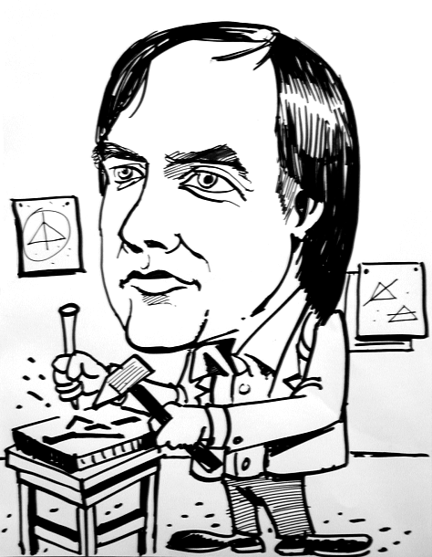

What’s Wrong with my Programming?
Vector 22:3, page 119

The first time I ever heard of APL or Ken Iverson was during a lunchtime discussion in Boulder, Colorado, when my manager, Bob Weiss, asked me and my co-worker, “What’s APL?” And I said, “In what context?”, and he said, “It’s a programming language. I’m taking this course in programming for managers and the instructor keeps talking about it. But he never tells us any more about it. He made one remark: he said programmers who use it like it better than their wives. So I think we should find out something about it.”On my way back from lunch to my office, I had to walk past the IBM Library. One of the nice things about IBM in those days was they were very careful to keep good libraries, a wonderful asset. I hope we don’t lose those to the world by the Internet. There was a magazine on the rack and it had a picture of Kenneth Iverson and Adin Falkoff and this new language APL. It was a tabloid-size thing, and I went in the library, sat down and read the article.
And I said, “Wow, this pretty interesting!”
At the time we were working on analyzing patterns in data from magnetic tapes. The guy I worked for had this patented idea for testing punched cards, which he transferred to tapes by damaging the data and looking at the patterns of failures. So we had these patterns of data to look at and APL looked perfect. You could analyze huge chunks of data all at once: I mean, up to sixteen thousand bytes, because you had a 32,000-byte workspace. It was amazing!
I immediately started pestering Larry and other people in Yorktown to become a user of this fledgling system, even though I didn’t have an APL type element and had to learn to use it with a Correspondence Courier type element – which perhaps explains why I didn’t completely stumble when I transferred stuff to J later on. (That’s an in-joke, I guess.)
I’d been teaching some physics courses at IBM in their internal education and I felt a need to evangelise about APL. I started a course in Boulder and with the students in this course quickly came to realise that knowledge of this stuff had changed our lives. I was talking just last night to one of those people. John Armitage was a PhD physicist working on rotating optical storage devices at IBM in Boulder in 1968, so this was pretty early work in that field. He said, “Yes, it absolutely changed my life.”
Another one was a technician who came to the course and said, “Well, I don’t know any math. I’ve never had math. I trained as a tech in the Navy.” He was a test technician who read oscilloscopes and collected data. He came to me shortly after we were all fledgling students, and said, “I’ve just figured out how to display that data that we’ve been struggling with. It’s really very simple, just a collapsing dyadic transpose of a four-dimensional matrix.” I thought: how many mathematicians would be comfortable with a collapsing dyadic transpose of a four-dimensional array? But he thought it was just common sense. So it was that, and that kind of experience, that caused me to say this is a different way of thinking and that’s what became an important theme in APL for me.
We were working with all this data and we wanted to read these tapes. Unfortunately at that time the only way you could get data into APL other than typing it was to punch a paper tape and read it on a 1050, which wasn’t really too cool. (Although you could send very long messages to the operator because it had separate line-feed and carriage-return controls. That was fun.) But I called and complained about this. And Ken said, “Well, we have this new facility called shared variables which solves that problem.” I was immediately interested in that and pestered them until at last we got the second installation of such a system in Boulder.
Another fellow there, Bob Schively [?], and I conspired to make a program which could read data from a card reader, or a magnetic tape of all things, or a disk drive. We were tinkering with this and that got me and Bob invited to Philadelphia (where the APL group had moved from Yorktown) to show this to Ken and Adin. We did that, and they were suitably impressed. But Bob had called this program APLIO, the name on the first card of the assembly deck. Adin was incensed by this and Ken wasn’t very happy either. He said, “This has nothing to do with APL, this stuff, nothing to do with it.” So Bob Schively became very agitated and went off and changed the name of the program to EIEIO. Ken thought this was fine, a pretty good description, but Adin still wasn’t very happy, and said in some exasperation, “Why don’t you call it the TSIO – the Tuttle-Schively Input Output?” We went ahead and did that; the name stuck and and we won some IBM awards for it, which was nice.
A couple of years later, in 1972, my family moved to Philadelphia and I joined the group there. It was great fun working with all these large amounts of data. But the best thing about it was that every day at work if I had an idea or a question, even if it was a stupid idea, I could walk into Ken’s office and say, “Ken, what about this?” I had the gift of this easy interaction with someone who clearly saw things way way above what I usually thought about. And occasionally he’d steal ideas from me.
I say I could drop in on him any time but not… just any time. Because then, and later, when Ken came to work for me, one of his requirements in his office was to have a couch, large enough to take a good nap on. Which he did, with regularity. When he felt a little bit tired, the door was closed: don’t knock, I’m napping. Those times were definitely off limits.
That was the high point of being around Ken, was you could just interact with him, and you frequently got a listen and then a rebuke, or a ‘clarification on your thinking’.
In 1973 or 1974 a manager at Kodak invited Ken to come and talk to Kodak corporate programmers, who were all required to work only in PL/1. Ken seized this opportunity, as he always did, and said to me, “Come along with me and tell them about all this new stuff you guys are doing.” We met in Rochester with about forty programmers to talk about using APL, and what it was. I sat and listened to Ken talk. I had a list of things I was going to talk about and each thing that Ken said I marked it off my list. I was just marking off the last thing that I had anything prepared to say about when Ken said, “And now here’s Joey Tuttle. He’ll tell you about all the good stuff that’s in APL.” So I got up and said, “Well, I don’t have very much to say, but are there any questions that we can answer?” A woman in the audience stood up, I think she was a senior staff member, and said “If I understand what you people are saying, you’re suggesting that we should adopt a new way of thinking.” Ken jumped up out of his chair, and said, “Yes! That’s exactly what I’m saying. Yes, you need to do this. You know, there are very great benefits from that.” And she said, “But that’s very scary. That’s like walking into a dark room and not knowing what’s there. Very scary.” He said, “Well, think of it this way. Walking into a dark room heightens your senses, and you’ll get benefits from that too.” I don’t think she was very convinced by this, and later as we were leaving the lecture hall our host walking beside us said, “You know, of all the people in that room, she could use a new way of thinking.”
By 1977 Ken’s group had moved back to Yorktown, so I was working in Yorktown but living in Palo Alto. I left IBM and joined I.P. Sharp Associates.
In 1978 I attended a lecture by Don Knuth at Stanford campus about TeX, his typesetting system. Now I’d never met Dr Knuth, but I was interested in the typesetting and saw an announcement so I made sure to go. I was interested in what he had to say about typesetting, but towards the end of his talk he said,
You know, if you begin to use TeX, you’ll be joining a sub-culture. People will look at you and say ‘What are you doing? Why are you using that strange notation?’ And you’ll try to explain how powerful it is. They’ll be very sceptical and look at you very strangely, much as we do at people who use APL. We don’t understand what it is that APL users are doing but it’s obviously very powerful.
So I went up to him afterwards and we had a nice discussion, and we had more over the years since then. Knuth gives credit to Ken for many things, concepts and notations and so on, that he adopted from APL for his books. But, true to his word, while he respects Iverson, APL, and the people who understand it, he has no time for learning anything about it. It’s not a part of his thought process. Many years later in a social conversation with Ken I said, “You know, Ken, you’re my favourite language designer, and Don Knuth is my favourite programmer.” And Ken said immediately, “What’s wrong with my programming?”
After I left IBM to join I.P. Sharp Associates (IPSA), people asked me, “What’s the worst thing about the change?” And I always replied that it was not being able to drop in casually on Ken and have conversations with him. I was overjoyed to end that when Ken retired from IBM to join IPSA in Toronto. Life was good.
By that time he’d worked out pretty radical changes in APL and published a paper in 1983 called “Rationalised APL”. The APL development group there, which was under my charge at that time, undertook retrofitting Ken’s new ideas to the SHARP APL system. I was a strong advocate for those at the time.
In 1986 I was involved in initiating a project called SAX, for “SHARP APL under Unix”. I didn’t invent the name, it was Paul Jackson in Palo Alto who chose the cute name, but it was a Rationalised APL system. Ken liked that but was unhappy it didn’t have wide distribution, so people could see it.
Ken went further in his thinking and in 1987 published “A Dictionary of APL”, a part of the thinking that a couple of years later led to the J programming language, which Ken continued to nurture and develop for the rest of his life.
About that same time, IPSA was acquired by Reuters, the British news and data services company, and like many acquisitions, this one had a very dampening effect on the fun we were all enjoying. As a senior manager in this new enterprise it gave me great satisfaction to help shelter the efforts of Ken, Roger Hui, Eugene McDonnell and others from the ’realities’ of the corporate world. After all, it was a perfect payback for the same shelter Ken provided me fifteen years earlier at IBM.
I can say without any reservation that Ken Iverson was the single biggest influence on my professional life. I have long considered him a mentor and he will be sorely missed.